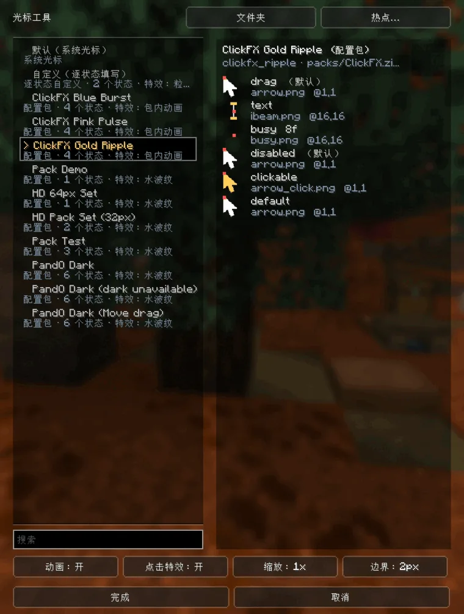
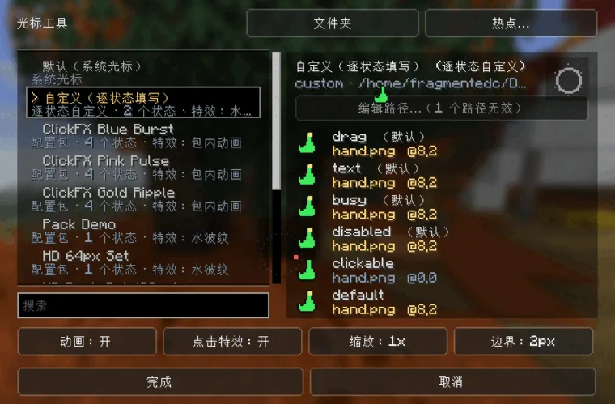
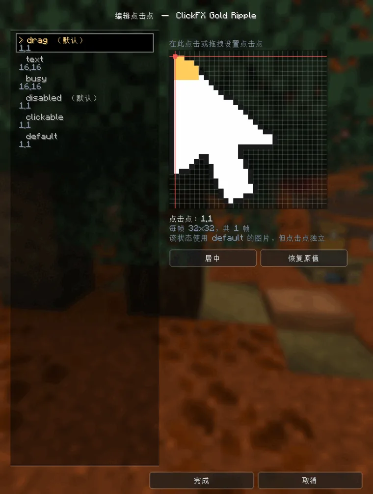

哪个状态用哪张图完全由外部包决定 —— 资源包、光标包、或 config 里的散装图片都行；换一套光标不用换模组，也不用重启游戏。
快速上手
首次进游戏时还没有任何光标集，列表里只有 默认（系统光标） 和 自定义（逐状态填写） 两行；放一个光标包进去，其它的就会出现：
- 拖进去：
.zip、带assets/的文件夹、或散装 PNG/JSON 直接拖到界面上（重名自动加-2） - 自己放：光标包放
config/cursorkit/packs/（文件夹或.zip），散装 JSON + PNG 放config/cursorkit/
config/cursorkit/（含 packs/）会被持续监听，一有变化就重读刷新，搜索词与选中项保留。
界面操作：
- 点列表即选中并立刻生效
- 左侧列表每行显示
名字 · 来源 · 状态数 · 特效，顶部有搜索框；第一行默认（系统光标），第二行自定义（逐状态填写） - 右侧是六个状态的实时预览（红点是点击点位置，缺失的状态标
(default)）和循环播放的特效预览 - 底部开关：
动画、点击特效、缩放、边界；右上角文件夹与热点… 完成保存，取消恢复到打开界面时的状态

自定义光标
不想做包、只想用现成的图片时，选列表第二行的 自定义（逐状态填写），点 编辑路径…：
- 六个状态各一行，填本机任意 PNG /
.cur的绝对路径（相对路径以游戏目录为基准）。 - 每行会当场校验：金色 = 找到、红色带
?= 没找到、灰色 = 留空（留空则该状态回退到default）；按钮上会提醒有几个路径无效。 - 这些路径存在
config/cursorkit.json的custom_states里，例如{"default": "D:/cursors/arrow.png", "clickable": "hand.cur"}。

逐状态热区编辑器
点击点（热区）不一定要在 JSON 里写死：选择界面右上角点 热点… 进入专门的编辑器，左边列出该集合每个状态的当前值（改过的显示金色），右边是放大后的图片 + 像素网格。
- 在图片上点击或拖拽即可把点击点放到那个像素，方向键逐像素微调。
居中一键放到图片正中，恢复原值丢掉这条改动、用回集合自带的值。- 编辑实时生效（真实光标会跟着动），
完成写入config/cursorkit.json的hotspots，取消全部还原。
因为改的是配置而不是包本身，资源包里的集合也能这样调，不用去动别人的文件。没有自己图片的状态（例如 text (default)）会借用 default 的图片，但点击点是独立的，改一个不会牵动别的。

功能
-
六个光标状态
默认箭头 / 可点击（手型）/ 文本输入（I 型）/ 拖拽 / 忙碌 / 禁用，按界面上下文自动切换。
-
高清光标
一个图片像素 = 屏幕上的一个物理像素，和系统光标完全一致。16×16 是常规大小，32×32、64×64、128×128 依次更大更清晰，4K 上照样锐利。
-
绝不插值
按图片自身像素的整数倍绘制（1:1，或不足 16 GUI 单位时整数放大），和系统光标一样没有半点模糊。
-
逐状态热区
点击点默认左上角，可以在光标集 JSON 里写，也可以直接在界面里点选 / 拖拽 / 方向键微调。
-
三种来源，优先级明确
config/cursorkit/散装文件 >config/cursorkit/packs/光标包 > 资源包。界面里会标出每个集合来自哪一层。 -
随包切换的点击特效
水波纹、粒子爆开、脉冲点，或包自带的自定义帧动画；换包就换一套点击反馈，也能单独关掉。
-
拖入即装
压缩包、文件夹、散装图片直接拖进界面，自动归类、自动避让重名、列表立刻刷新。
-
支持
.curWindows 光标文件直接丢进
config/cursorkit/或光标包即可，图片与自带热点自动读取（资源包里只能放 PNG）。
做自己的光标包
一个光标集 = 一份 JSON + 若干贴图。想先试效果：把一张 32×32 的 PNG 丢进 config/cursorkit/ 就能用，再加一份同名 JSON 补其它状态。
资源包： resourcepacks/<包名>/ 或 <包名>.zip
光标包： config/cursorkit/packs/<包名>/ 或 <包名>.zip
本地单集合： config/cursorkit/<集合>.json资源包与光标包内部结构相同（assets/<命名空间>/cursor/<集合>.json + textures/cursor/<贴图>），所以同一个包两种身份都能用，只有资源包路线需要 pack.mcmeta。文件名（去掉扩展名）就是集合 id，决定覆盖关系。
完整的字段表、图片规格、热区、动画与特效参数见《制作光标包》；仓库 examples/ 里也有现成包可以直接改。
点击特效
click_effect 是光标集 JSON 里的可选段，跟着光标包走：换一个包就换一套点击反馈。每次按下鼠标时在点击位置生成特效，光标本身不动，不影响瞄准。
type | 效果 |
|---|---|
ripple | 扩散的圆环 + 少量粒子（默认） |
burst | 只有粒子，向外爆开 |
pulse | 原地闪一下的实心点 |
image | 包自带的自定义动画：一条横向帧带，点击时在点击位置播放 |
none | 这个包不要特效 |
颜色、半径、时长、粒子数、image 的帧带参数都在《制作光标包》里。界面底部的 点击特效 是总开关；选 默认（系统光标） 时也会播模组自带的水波纹。
配置项
配置在 config/cursorkit.json（首次启动自动生成）：
{
"enabled": true,
"selected_set": "",
"scale": 1,
"animate": true,
"click_effect": true,
"edge_margin": 2
}| 字段 | 默认 | 说明 |
|---|---|---|
enabled | true | 总开关。关闭后完全还原系统光标 |
selected_set | "" | 当前光标集 id（文件名去掉扩展名）。留空 = 使用系统光标；指向已删除的集合时立即交还系统光标（不会跳去别的集合） |
scale | 1 | 额外整数倍缩放，与集合自身的 scale 相乘 |
animate | true | 关闭后光标固定为 default 的静态图：不切换状态、也不播放动画 |
click_effect | true | 点击特效总开关（布尔值） |
edge_margin | 2 | 距窗口边缘多少像素内不接管光标，避免找不到鼠标 |
custom_states | 无 | 逐状态自定义图片路径，即界面里的「自定义（逐状态填写）」 |
custom_effect | 水波纹 | 手工集合自己的点击特效，写法与包里的 click_effect 相同 |
hotspots | 无 | 在热区编辑器里改过的点击点，形如 {"集合id": {"状态": [x, y]}} |
状态判定
| 状态 | 何时显示 | 判定来源 |
|---|---|---|
drag | 按住左键拖拽（物品、滑块） | 原版 Screen#isDragging / 左键按下 |
text | 文本框、告示牌编辑获得焦点 | 原版请求 IBEAM |
busy | 加载遮罩存在 | 界面覆盖层非空 |
disabled | 悬停不可用控件 | 原版请求 NOT_ALLOWED |
clickable | 悬停可点击控件、可拖拽边缘 | 原版请求 POINTING_HAND / RESIZE_* |
default | 其它情况 | — |
优先级：drag > text > busy > disabled > clickable > default。
Minecraft 26.3 起会为每个控件请求光标类型，所以任何模组的界面都自动适用；Cursor Kit 只补上原版表达不了的「拖拽」与「加载中」，并额外提供下面这个覆盖入口。
两个边界行为：进入游戏（视角被锁定时）光标完全不接管；把指针推到窗口最边缘时系统光标会回来（edge_margin 控制这个范围）。
给其它模组用的 API
CursorStateProviders.register((screen, mouseX, mouseY, context) -> {
if (screen instanceof MySpecialScreen) {
return CursorState.DRAG; // 本帧强制用这个状态
}
return null; // 交回内置判定
});按注册顺序询问，第一个返回非 null 的胜出；context 里能看到原版请求的类型、是否拖拽、是否忙碌。CursorState、CursorSet 等模型类都与 Minecraft 无关，方便书写与测试。
常见问题
装了模组但光标没变？ 列表里选中项是不是 默认（系统光标）？config/cursorkit.json 的 enabled 是不是 false？另外先确认已经有光标集可选 —— 刚装好模组时一个包都还没有，往 config/cursorkit/packs/ 放一个就会出现。
光标模糊 / 不够精细？ 模组按整数倍绘制、不做插值，所以素材分辨率就是清晰度的上限。用 32×32、64×64、128×128 的图，不要用 16×16 放大。
资源包里的光标没出现？ 资源包必须在资源包界面启用才会被加载；不想每次手动启用的话，把同一个包放进 config/cursorkit/packs/（结构完全一样），模组会直接读，永远是开启的。
找不到鼠标了？ 把指针推到窗口最边缘就会交还系统光标，边界 开关（edge_margin）可以把这个范围调大；也可以随时在列表里选 默认（系统光标）。
点击特效不显示？ 界面底部的 点击特效 开关是总开关；单个包也可以在 JSON 里写 "type": "none" 关掉。
服务器上要装吗？ 不用。这是纯客户端模组，服务器装了也不做任何事，联机时服务端没装也不会报错。
能在 NeoForge / Quilt 上用吗？ 能。同一个 jar 三端通用，Fabric 与 Quilt 共用（Quilt 走 Fabric 兼容层）；NeoForge 上没有 Mod Menu，模组列表由 NeoForge 自己提供。
怎么让自定义光标一直显示，不要突然变回系统光标？ 指针靠近窗口边缘时模组会主动交还系统光标（edge_margin，默认 2 像素），这是为了避免鼠标贴边时点不到东西。把 边界 调到 0 就会一直用自定义光标。
制作光标包
照着做就行，十分钟能做出一个自己的光标。不用写代码。
要准备的东西
- 一张正方形的 PNG 图片（背景留透明，建议 32×32 像素）
- 一个画图软件（Aseprite / Photoshop / GIMP / 系统画图都行）
- 记事本（用来写一个文本文件，内容后面照抄）
第一步：先让一张图变成光标
- 把 PNG 复制到游戏的
config/cursorkit/文件夹里 - 文件名改成
my_arrow.png—— 用小写字母、数字、下划线，别用中文和空格 - 进游戏：选项 → 视频设置 →
光标 - 列表里会出现
my_arrow，点一下选中
现在整局游戏的光标就是这张图了（六个状态都用它）。
找不到config/cursorkit/？在光标列表界面点右上角的文件夹，它会帮你打开。
第二步：让不同状态用不同的图
先解释一下：游戏里光标不是只有一种样子 —— 指到按钮上会变手型、在输入框里会变 I 型…… 这些叫状态，一共六个：
| 状态 | 什么时候出现 |
|---|---|
default | 平时（必须有） |
clickable | 指到按钮等能点的东西上 |
text | 在输入框、告示牌里打字时 |
drag | 按住左键拖东西时 |
disabled | 指到灰掉、不能点的按钮上 |
busy | 加载中（转圈那种） |
想让它们各用一张图：
- 再画几张图，都放进
config/cursorkit/ - 在同一个文件夹里新建一个文本文件，命名成
my_arrow.json（和 PNG 同名，扩展名换成 json） - 把下面的内容抄进去，把文件名改成你自己的：
{
"states": {
"default": { "texture": "my_arrow.png" },
"clickable": { "texture": "my_hand.png" },
"text": { "texture": "my_ibeam.png" },
"drag": { "texture": "my_fist.png" },
"disabled": { "texture": "my_gray.png" }
}
}- 存盘，回到游戏 —— 列表会自己刷新，不用重启，点一下右侧就能看到六个状态的预览
没写的状态（上面例子里是 busy）会自动用 default 的图，所以 default 是唯一必须有的。
第三步：把点击点放到正确的位置
点击光标时，真正生效的只有一个像素，叫点击点（热区）。它默认在图片的左上角，所以箭头类光标通常正好；但手型、I 型就该放中间。
不会算坐标没关系：在光标列表界面点右上角 热点…，在放大图上点一下或拖一下就设好了，方向键可以一格一格微调，点 完成 保存。改的是你的配置，不会动别人的包。
第四步：让"加载中"转起来（可选）
动画就是把好几帧横着拼成一张长图：比如 8 张 32×32 的转圈图，拼成一张 256×32（宽 = 帧数 × 高）。
在 JSON 里给这个状态加两个数字：
"busy": { "texture": "my_spinner.png", "frames": 8, "frame_ms": 80 }frames= 几张帧frame_ms= 每帧显示多少毫秒（80 大约是每秒 12 帧）
两个要点：每帧必须是正方形，所有帧必须在同一行。
第五步：加点击特效（可选）
想让点下去有反馈，加一行就行：
"click_effect": { "type": "ripple", "color": "#FFD479" }type | 点下去是什么样 |
|---|---|
ripple | 一圈光晕扩散开（最常用） |
burst | 一堆粒子炸开 |
pulse | 原地闪一下 |
image | 用你自己画的动画（下面单独说） |
none | 不要特效 |
想调大小、时长、粒子数，加 "radius": 15、"duration_ms": 450、"particles": 6 这些字段，不写就用默认值。
用自己画的动画：做成和上面动画一样的横向长图，然后写：
"click_effect": { "type": "image", "texture": "my_ring.png", "frames": 6, "frame_ms": 60, "size": 24 }size 是它画出来多大（屏幕像素），淡出效果要画进图里。
第六步：打包成一个能分享的包
如果要发给别人，就得做成光标包：一个文件夹（或压缩包），里面按固定结构放：
mypack/ ← 包名，随便起
└── assets/
└── mypack/ ← 随便起的名字，跟上面保持一致就行
├── cursor/
│ └── my_arrow.json ← 你的 JSON
└── textures/
└── cursor/
├── my_arrow.png ← 你的图
└── my_hand.png注意 JSON 里的路径要相对于 textures/cursor/：上面这个例子里写 "texture": "my_arrow.png"。如果图放在子文件夹 cursor/arrow/ 里，就写 "texture": "arrow/my_arrow.png"。
做完把 mypack 文件夹丢进 config/cursorkit/packs/，或者直接拖进游戏界面，就装好了。
想打成压缩包：压缩包里第一层就要是 assets/，别把 mypack 再套一层（套一层也能识别，但别套两层）。
mypack.zip
└── assets/... ✓ 正确这个包同样能当资源包用：丢进resourcepacks/并在资源包界面启用即可（这时需要一个pack.mcmeta，内容照抄examples/里的）。但资源包只能用 PNG，.cur只能用上面那种光标包。
遇到问题看这里
| 现象 | 原因 |
|---|---|
| 列表里找不到我的光标 | 文件名有大写/中文；或者没放在 config/cursorkit/；或者 JSON 里 default 写漏了（这种情况整个集合会被跳过，日志里有记录） |
只有 default 是我画的，其它状态不对 | 没写进 JSON 的状态会自动用 default 的图，这是正常的 |
| 光标又大又糊 | 图片分辨率既决定清晰度也决定大小。16×16 是普通大小，想要更清楚就画 32×32 / 64×64，别把小图放大 |
| 动画不动 | 帧必须在同一行；图宽要等于「帧数 × 帧高」；frames 和图对不上时会以图为准 |
| 点下去的位置不对 | 用界面里的 热点… 调，别手算坐标 |
| 放资源包里没反应 | 资源包要在资源包界面里启用；放进 config/cursorkit/packs/ 则是永远开启的 |
所有字段速查
| 字段 | 要写吗 | 不写的话 | 说明 |
|---|---|---|---|
states.default.texture | 要 | — | 图片路径。本地单集合相对 config/cursorkit/；光标包/资源包相对 textures/cursor/ |
states.<其它状态>.texture | 不用 | 用 default 的图 | 六个状态：clickable text drag disabled busy |
hotspot | 不用 | 左上角 [0, 0] | 点击点，单位是图片像素，写成 [x, y]；.cur 文件用自带的 |
frames | 不用 | 1 | 动画帧数 |
frame_ms | 不用 | 100 | 每帧毫秒数 |
name | 不用 | 用文件名 | 只影响界面显示的名字 |
scale | 不用 | 1 | 整体再放大几倍 |
click_effect | 不用 | 模组自带水波纹 | 见第五步 |
想直接抄现成的
模组仓库的 examples/ 里已经有能用的包，复制过来改图就行：
CursorKit-Test-Pack/—— 六状态齐全的例子，还有 32×32、64×64 的高清例子ClickFX-Cursor-Pack/—— 三种点击特效 + 自带帧带动画的例子config-cursorkit/—— 直接复制到config/就能用的目录结构